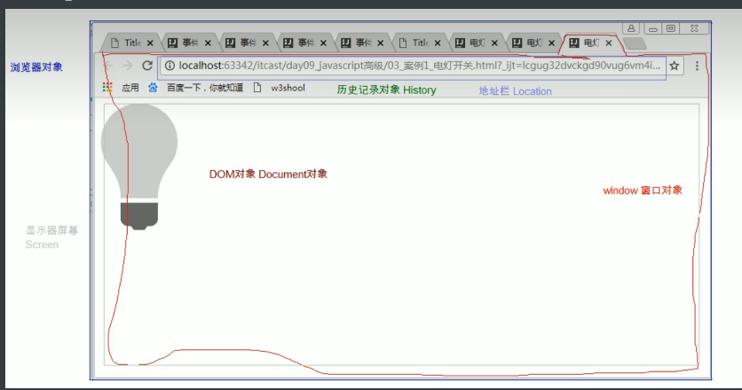

# JavaScript 基础
# 概念
一门客户端脚本语言
- 运行在客户端浏览器中的。每一个浏览器都有 JavaScript 的解析引擎
- 脚本语言：不需要编译，直接就可以被浏览器解析执行了
# 功能
- 可以来增强用户和 html 页面的交互过程，可以来控制 html 元素，让页面有一些动态的效果，增强用户的体验。
# JavaScript 发展史
- 1992 年，Nombase 公司，开发出第一门客户端脚本语言，专门用于表单的校验。命名为 ： C-- ，后来更名为：ScriptEase
- 1995 年，Netscape (网景) 公司，开发了一门客户端脚本语言：LiveScript。后来，请来 SUN 公司的专家，修改 LiveScript，命名为 JavaScript
- 1996 年，微软抄袭 JavaScript 开发出 JScript 语言
- 1997 年，ECMA (欧洲计算机制造商协会)，制定出客户端脚本语言的标准：ECMAScript，就是统一了所有客户端脚本语言的编码方式。
- JavaScript = ECMAScript + JavaScript 自己特有的东西 (BOM+DOM)
# ECMAScript：客户端脚本语言的标准
# 基本语法
# 与 html 结合方式
- 内部 JS：
定义 <script>，标签体内容就是 js 代码 - 外部 JS：
定义 <script>，通过 src 属性引入外部的 js 文件
注意
<script> 可以定义在 html 页面的任何地方。但是定义的位置会影响执行顺序。
<script> 可以定义多个。
# 注释
- 单行注释：// 注释内容
- 多行注释：/ 注释内容 /
# 数据类型
1. 原始数据类型 (基本数据类型)：
1. number：数字。 整数 / 小数 / NaN (not a number 一个不是数字的数字类型)
2. string：字符串。 字符串 "abc" "a" 'abc'
3. boolean: true 和 false
4. null：一个对象为空的占位符
5. undefined：未定义。如果一个变量没有给初始化值，则会被默认赋值 undefined
2. 引用数据类型：对象
# 变量
变量：一小块存储数据的内存空间
Java 语言是强类型语言，而 JavaScript 是弱类型语言。
强类型：在开辟变量存储空间时，定义了空间将来存储的数据的数据类型。只能存储固定类型的数据
弱类型：在开辟变量存储空间时，不定义空间将来的存储数据类型，可以存放任意类型的数据。
语法：
var 变量名 = 初始化值；
typeof 运算符：获取变量的类型。
注：null 运算后得到的是 object
# 运算符
一元运算符：只有一个运算数的运算符
++，-- ， +(正号)
++ --: 自增 (自减)
++(--) 在前，先自增 (自减)，再运算
++(--) 在后，先运算，再自增 (自减)
+(-)：正负号
注意：在 JS 中，如果运算数不是运算符所要求的类型，那么 js 引擎会自动的将运算数进行类型转换其他类型转 number：
string 转 number：按照字面值转换。如果字面值不是数字，则转为 NaN（不是数字的数字）
boolean 转 number：true 转为 1，false 转为 0算数运算符
/ % + - *赋值运算符
= += -+....比较运算符
<>= <= == ===(全等于)
- 比较方式
1. 类型相同：直接比较
* 字符串：按照字典顺序比较。按位逐一比较，直到得出大小为止。
2. 类型不同：先进行类型转换，再比较
* ===：全等于。在比较之前，先判断类型，如果类型不一样，则直接返回 false
- 比较方式
逻辑运算符
&& || !- 其他类型转 boolean：
1. number：0 或 NaN 为假，其他为真
2. string：除了空字符串 ("")，其他都是 true
3. null&undefined: 都是 false
4. 对象：所有对象都为 true
- 其他类型转 boolean：
三元运算符
？: 表达式
var a = 3;
var b = 4;
var c = a > b ? 1:0;- 语法：
表达式？值 1: 值 2;
判断表达式的值，如果是 true 则取值 1，如果是 false 则取值 2；
- 语法：
流程控制语句：
if...else...
switch:
在 java 中，switch 语句可以接受的数据类型： byte int shor char, 枚举 (1.5) ,String (1.7)
switch (变量):
case 值:
在 JS 中，switch 语句可以接受任意的原始数据类型
while
do...while
for
JS 特殊语法：
语句以；结尾，如果一行只有一条语句则；可以省略 (不建议)
变量的定义使用 var 关键字，也可以不使用
用： 定义的变量是局部变量
不用：定义的变量是全局变量 (不建议)
练习：99 乘法表
<!DOCTYPE html>
<html lang="en">
<head>
<meta charset="UTF-8">
<title>99乘法表</title>
<style>
td{border: 1px solid;
}</style>
<script>
document.write("<table align='center'>");
//1. 完成基本的 for 循环嵌套，展示乘法表for (var i = 1; i <= 9 ; i++) {
document.write("<tr>");
for (var j = 1; j <=i ; j++) {
document.write("<td>");
// 输出 1 * 1 = 1document.write(i + " * " + j + " = " + ( i*j) +" ");
document.write("</td>");
}/*// 输出换行document.write ("<br>");*/document.write("</tr>");
}//2. 完成表格嵌套document.write("</table>");
</script>
</head>
<body>
</body>
</html>
# 基本对象
# Function：函数 (方法) 对象
创建
var fun = new Function (形式参数列表，方法体); // 忘掉吧
function 方法名称 (形式参数列表){
方法体
}var 方法名 = function (形式参数列表){
方法体
}
属性：length: 代表形参的个数
- 特点：
- 方法定义是，形参的类型不用写，返回值类型也不写。
- 方法是一个对象，如果定义名称相同的方法，会覆盖
- 在 JS 中，方法的调用只与方法的名称有关，和参数列表无关
- 在方法声明中有一个隐藏的内置对象（数组），arguments, 封装所有的实际参数
- 调用：
方法名称 (实际参数列表);
# Array: 数组对象
- 创建：
- var arr = new Array (元素列表);
- var arr = new Array (默认长度);
- var arr = [元素列表];
- 方法
join (参数): 将数组中的元素按照指定的分隔符拼接为字符串
push () 向数组的末尾添加一个或更多元素，并返回新的长度。 - 属性
length: 数组的长度 - 特点：
- JS 中，数组元素的类型可变的。
- JS 中，数组长度可变的。
# Boolean
# Date：日期对象
创建：
var date = new Date();方法：
toLocaleString ()：返回当前 date 对象对应的时间本地字符串格式
getTime (): 获取毫秒值。返回当前如期对象描述的时间到 1970 年 1 月 1 日零点的毫秒值差
# Math：数学对象
创建：
- 特点：Math 对象不用创建，直接使用。 Math. 方法名 ();
方法：
random (): 返回 0 ~ 1 之间的随机数。 含 0 不含 1
ceil (x)：对数进行上舍入。
floor (x)：对数进行下舍入。
round (x)：把数四舍五入为最接近的整数。属性：
PI
# Number
# String
# RegExp：正则表达式对象
正则表达式：定义字符串的组成规则。
单个字符:[]
如： [a] [ab] [a-zA-Z0-9_]
- 特殊符号代表特殊含义的单个字符:
\d: 单个数字字符 [0-9] \w: 单个单词字符 [a-zA-Z0-9_]
- 量词符号：
?：表示出现 0 次或 1 次
*：表示出现 0 次或多次
+：出现 1 次或多次
{m,n}: 表示 m<= 数量 <= n- m 如果缺省： {,n}: 最多 n 次
- n 如果缺省：{m,} 最少 m 次
- 开始结束符号
- ^: 开始
- $: 结束
- 正则对象：
- 创建
- var reg = new RegExp ("正则表达式");
- var reg = / 正则表达式 /;
- 方法
- test (参数): 验证指定的字符串是否符合正则定义的规范
# Global
特点：全局对象，这个 Global 中封装的方法不需要对象就可以直接调用。 方法名 ();
方法：
encodeURI ():url 编码
decodeURI ():url 解码encodeURIComponent ():url 编码，编码的字符更多
decodeURIComponent ():url 解码parseInt (): 将字符串转为数字
- 逐一判断每一个字符是否是数字，直到不是数字为止，将前边数字部分转为 number
isNaN (): 判断一个值是否是 NaN - NaN 六亲不认，连自己都不认。NaN 参与的 == 比较全部问 false
eval (): 讲 JavaScript 字符串，并把它作为脚本代码来执行。
- 逐一判断每一个字符是否是数字，直到不是数字为止，将前边数字部分转为 number
URL 编码
传智播客 = % E4% BC% A0% E6%99% BA% E6%92% AD% E5% AE% A2
超链接功能： | |
1可以被点击；不加href看不到超链接的样式 | |
2.点击之后跳转到href指定的url-- |
# DOM 简单学习
为了满足案例要求
功能：控制 html 文档的内容
获取页面标签 (元素) 对象：Element
document.getElementById ("id 值"): 通过元素的 id 获取元素对象
操作 Element 对象：
修改属性值：
1 明确获取的对象是哪一个？
2 查看 API 文档，找其中有哪些属性可以设置
修改标签体内容：
属性：innerHTML
获取元素对象
使用 innerHTML 属性修改标签体内容
# 事件简单学习
功能： 某些组件被执行了某些操作后，触发某些代码的执行。
- 造句： xxx 被 xxx, 我就 xxx
- 我方水晶被摧毁后，我就责备对友。
- 敌方水晶被摧毁后，我就夸奖自己。
# 绑定事件
直接在 html 标签上，指定事件的属性 (操作)，属性值就是 js 代码
- 事件：onclick--- 单击事件
通过 js 获取元素对象，指定事件属性，设置一个函数
# 案例：电灯开关
（见练习题）
# BOM: 浏览器对象模型
# 概念
Browser Object Model 浏览器对象模型
将浏览器的各个组成部分封装成对象。
# 组成
Window：窗口对象
Screen：显示器屏幕对象
History：历史记录对象
Location：地址栏对象
Navigator：浏览器对象

# Window: 窗口对象
# 与弹出框有关的方法
alert() 显示带有一段消息和一个确认按钮的警告框。
confirm() 显示带有一段消息以及确认按钮和取消按钮的对话框。
如果用户点击确定按钮，则方法返回 true
如果用户点击取消按钮，则方法返回 false
prompt() 显示可提示用户输入的对话框。
返回值：获取用户输入的值
与打开关闭有关的方法：
close() 关闭浏览器窗口。
谁调用我 ，我关谁
open () 打开一个新的浏览器窗口
返回新的 Window 对象
# 与定时器有关的方式
setTimeout() 在指定的毫秒数后调用函数或计算表达式。
参数：
js 代码或者方法对象
毫秒值
返回值：唯一标识，用于取消定时器
clearTimeout() 取消由 setTimeout () 方法设置的 timeout。
setInterval() 按照指定的周期（以毫秒计）来调用函数或计算表达式。
clearInterval() 取消由 setInterval () 设置的 timeout。
# 属性
- 获取其他 BOM 对象：
history
location
Navigator
Screen: - 获取 DOM 对象
document
# 特点
Window 对象不需要创建可以直接使用 window 使用。 window. 方法名 ();
window 引用可以省略。 方法名 (); 例如：alert（）；
# Location: 地址栏对象
1. 创建 (获取)：
window.location
location
2. 方法：
reload() 重新加载当前文档。刷新 location.relode();
3. 属性
href 设置或返回完整的 URL 路径。 location.href = "http://www.itcast.cn";
# History: 历史记录对象
创建 (获取)：
- window.history
- history
方法：
back () 加载 history 列表中的前一个 URL。
forward () 加载 history 列表中的下一个 URL。
go (参数) 加载 history 列表中的某个具体页面。
参数：
正数：前进几个历史记录
负数：后退几个历史记录
属性：
length 返回当前窗口历史列表中的 URL 数量。
# DOM: 文档对象模型
概念： Document Object Model
将标记语言文档的各个组成部分，封装为对象。可以使用这些对象，对标记语言文档进行 CRUD 的动态操作
W3C DOM 标准被分为 3 个不同的部分：
1. 核心 DOM - 针对任何结构化文档的标准模型
Document：文档对象
Element：元素对象
Attribute：属性对象
Text：文本对象
Comment: 注释对象
Node：节点对象，其他 5 个的父对象
2.XML DOM - 针对 XML 文档的标准模型
3.HTML DOM - 针对 HTML 文档的标准模型
# 核心 DOM 模型：
# Document：文档对象
创建 (获取)：在 html dom 模型中可以使用 window 对象来获取
- window.document
- document
方法：
a 获取 Element 对象：
getElementById () ： 根据 id 属性值获取元素对象。id 属性值一般唯一
getElementsByTagName ()：根据元素名称获取元素对象们。返回值是一个数组
getElementsByClassName (): 根据 Class 属性值获取元素对象们。返回值是一个数组
getElementsByName (): 根据 name 属性值获取元素对象们。返回值是一个数组
b 创建其他 DOM 对象：
createAttribute(name)
createComment()
createElement()
createTextNode()属性
# Element：元素对象
- 获取 / 创建：通过 document 来获取和创建
- 方法：
- removeAttribute ()：删除属性
- setAttribute ()：设置属性
# Node：节点对象
- 特点：所有 dom 对象都可以被认为是一个节点，，，其他 5 个的父对象
- 方法：
- CRUD (增删改查）dom 树：
- appendChild ()：向节点的子节点列表的结尾添加新的子节点。
- removeChild () ：删除（并返回）当前节点的指定子节点。
- replaceChild ()：用新节点替换一个子节点。
- CRUD (增删改查）dom 树：
- 属性：
- parentNode 返回节点的父节点。
# HTML DOM
- 标签体的设置和获取：innerHTML
- 使用 html 元素对象的属性
- 控制元素样式
使用元素的 style 属性来设置
如：//修改样式方式1
div1.style.border = "1px solid red";
div1.style.width = "200px";
//font-size--> fontSize
div1.style.fontSize = "20px";
提前定义好类选择器的样式，通过元素的 className 属性来设置其 class 属性值。
# 事件监听机制：
# 概念
某些组件被执行了某些操作后，触发某些代码的执行。
- 事件：某些操作。如： 单击，双击，键盘按下了，鼠标移动了
- 事件源：组件。如： 按钮 文本输入框...
- 监听器：代码。
- 注册监听：将事件，事件源，监听器结合在一起。 当事件源上发生了某个事件，则触发执行某个监听器代码。
# 常见的事件
- 点击事件：
- onclick：单击事件
- ondblclick：双击事件
- 焦点事件
- onblur：失去焦点
- onfocus: 元素获得焦点。
- 加载事件：
- onload：一张页面或一幅图像完成加载。
- 鼠标事件：
- onmousedown 鼠标按钮被按下。
- onmouseup 鼠标按键被松开。
- onmousemove 鼠标被移动。
- onmouseover 鼠标移到某元素之上。
- onmouseout 鼠标从某元素移开。
- 键盘事件：
1. onkeydown 某个键盘按键被按下。
2. onkeyup 某个键盘按键被松开。
3. onkeypress 某个键盘按键被按下并松开。 - 选择和改变
1. onchange 域的内容被改变。
2. onselect 文本被选中。 - 表单事件：
- onsubmit 确认按钮被点击。
- onreset 重置按钮被点击。
# Bootstrap
# 概念
一个前端开发的框架，Bootstrap，来自 Twitter，是目前很受欢迎的前端框架。Bootstrap 是基于 HTML、CSS、JavaScript 的，它简洁灵活，使得 Web 开发更加快捷。
- 框架：一个半成品软件，开发人员可以在框架基础上，在进行开发，简化编码。
- 好处：
定义了很多的 css 样式和 js 插件。我们开发人员直接可以使用这些样式和插件得到丰富的页面效果。
响应式布局。
- 同一套页面可以兼容不同分辨率的设备。
快速入门
- 下载 Bootstrap
- 在项目中将这三个文件夹复制
- 创建 html 页面，引入必要的资源文件
# 基本框架：Bootstrap_HellowWorld
<!DOCTYPE html> | |
<html lang="zh-CN"> | |
<head> | |
<meta charset="utf-8"> | |
<meta http-equiv="X-UA-Compatible" content="IE=edge"> | |
<meta name="viewport" content="width=device-width, initial-scale=1"> | |
<title>Bootstrap HelloWorld</title> | |
<link href="css/bootstrap.min.css" rel="stylesheet"> | |
<script src="js/jquery-3.2.1.min.js"></script> | |
<script src="js/bootstrap.min.js"></script> | |
</head> | |
<body> | |
你好，世界！ | |
</body> | |
</html> |
# 响应式布局
同一套页面可以兼容不同分辨率的设备。
实现：依赖于栅格系统：将一行平均分成 12 个格子，可以指定元素占几个格子
步骤：
- 定义容器。相当于之前的 table、
- 容器分类：
- container：两边留白
- container-fluid：每一种设备都是 100% 宽度
- 容器分类：
- 定义行。相当于之前的 tr 样式：row
- 定义元素。指定该元素在不同的设备上，所占的格子数目。样式：col - 设备代号 - 格子数目
- 设备代号：
- xs：超小屏幕 手机 (<768px)：col-xs-12
- sm：小屏幕 平板 (≥768px)
- md：中等屏幕 桌面显示器 (≥992px)
- lg：大屏幕 大桌面显示器 (≥1200px)
- 设备代号：
- 注意：
- 一行中如果格子数目超过 12，则超出部分自动换行。
- 栅格类属性可以向上兼容。栅格类适用于与屏幕宽度大于或等于分界点大小的设备。
- 如果真实设备宽度小于了设置栅格类属性的设备代码的最小值，会一个元素沾满一整行。
- 定义容器。相当于之前的 table、
# CSS 样式和 JS 插件
# 全局 CSS 样式
- 按钮：class="btn btn-default"
- 图片：
- class="img-responsive"：图片在任意尺寸都占 100%
- 图片形状
- <img src="..." alt="..." class="img-rounded">：方形
- <img src="..." alt="..." class="img-circle"> ： 圆形
- <img src="..." alt="..." class="img-thumbnail"> ：相框
- 表格
- table
- table-bordered
- table-hover
- 表单
- 给表单项添加：class="form-control"
- 组件：
- 导航条
- 分页条
- 插件：
- 轮播图